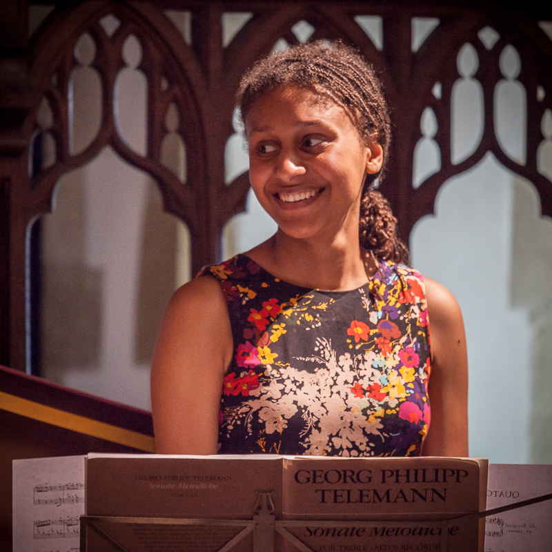

After reading History at UCL, Charlotte was offered a postgraduate scholarship to the Royal Academy of Music, with additional awards from Help Musicians UK and the Biddy Baxter and John Hosier Music Trust. At the Academy she studied recorder with Anna Stegmann and baroque violin with Nicolette Moonen, graduating with a Distinction and a DipRAM award for oustanding performance.
In 2012, Charlotte became the first recorder player in the BBC Young Musician’s history to win the woodwind category. She went on to perform in the concerto final with the Royal Northern Sinfonia, broadcast live from the Sage Gateshead. Later highlights have included projects with the English Chamber Orchestra and Academy of Ancient Music, recitals across the UK and abroad, appearances on Radio 3’s In Tune and Early Music Show, and multiple composer collaborations.
A keen ensemble musician, Charlotte co-founded Parandrus in 2017. With repertoire spanning from the 12th Century to new commissions, the ensemble received first prize at the 2017 ORDA International competition in Amsterdam, and won the 2019 Nancy Nuttall Early Music competition, at the Royal Academy of Music. Parandrus has been featured on BBC Radio 3’s Early Music Show and Early Music Now.
Charlotte has also worked closely with harpsichordist, jazz pianist and composer David Gordon, premiering his recorder concerto, Romanesque, at the Ryedale Festival with the Fitzwilliam String Quartet.
As a violinist, Charlotte is a founding member of the Chineke! Orchestra. She has worked on a range of projects from Chineke!’s BBC Proms debut and five of the orchestra’s album recordings, to a collaboration with DJ and producer Carl Craig at the Royal Albert Hall.
As a session musician, Charlotte has performed live with The Good, the Bad and the Queen (Damon Albarn; Paul Simonon; Simon Tong; Tony Allen) on Later with Jools Holland, and with Yebba and Mark Ronson on Strictly Come Dancing.
Charlotte has twice been a guest presenter on BBC Radio 3’s Inside Music and is a programme annotator for the Chineke! Orchestra. She is also a broadcast assistant with Tandem Productions.
Charlotte is currently available for recorder-related projects for virtual collaborations, and as a violinist for both in-person and virtual projects. She believes music participation can and should remain safely open to all, and is especially happy to work with covid-conscious and anti-ableist organisations and performers.
As the virus that causes Covid-19 is predominantly airborne, Charlotte wears an unvalved FFP3 respirator during in-person projects and performances, and is able to contribute the use of a NIOSH CO₂ monitor to measure ventilation. She can also contribute two portable air filtration units if transportation options are available (both units can easily fit in a car boot or equivalent). Filter specifications are available on request.
Charlotte is also happy to explore more inclusive, covid-safer practices with any performers or organisations who would like to find out more.
Charlotte remains grateful for the professional support of the following organisations and individuals: